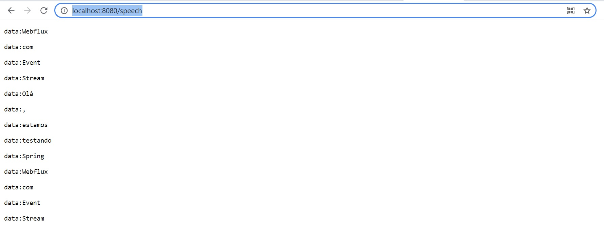

Spring Webflux.
O Spring Webflux é uma lib do ecossistema Spring para programação reativa.
A programação reativa para Java é uma ótima opção para quem quer uma aplicação não blocante.
Para atender as requisições assíncronas, o Webflux utiliza o servidor Netty que vem embarcado com a lib.
Diferente da programação síncrona, a programação não blocante consegue atender várias requisições simultaneamente.
Mas para que o sistema atenda às requisições simultaneamente, toda infraestrutura precisa ser não blocante.
Configuração de uma aplicação Event Stream.
Para construir um exemplo mais simples sem precisar criar uma infraestrutura com um banco NOSQL, vamos mostrar uma aplicação com Event Stream.
O Event Stream disponibiliza um processamento e entrega de dados em forma de fluxos contínuos.
Vamos adicionar a dependência do Webflux dentro do POM.xml de uma aplicação Spring boot:
Dentro do Webflux existe uma diferença na construção do endpoint, onde utilizamos o wrapper Mono para retornar 1 item e Flux para retorno de uma coleção.
Podemos agora criar um endpoint para testar nossa aplicação Event Stream:
Podemos verificar que as chamadas são atendidas a cada 1 segundo até a solicitação de cancelamento:

Conclusão.
Utilizar programação reativa pode resolver alguns problemas como requisições pesadas ou que não precisam retornar a resposta imediatamente, lembrando que toda infraestrutura deve atender requisições assíncronas para que o Webflux funcione perfeitamente.